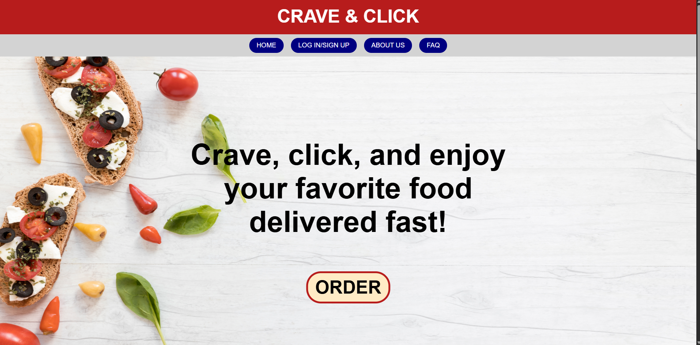

Live Site · 2023
Click Crave
An interactive online food ordering platform with menu browsing, live cart updates, and a mobile-first responsive build.
HTML5
CSS3
JavaScript
- Interactive menu with categories & search
- Shopping cart with live quantity updates
- Fully responsive across all screen sizes
- Mobile-first design philosophy